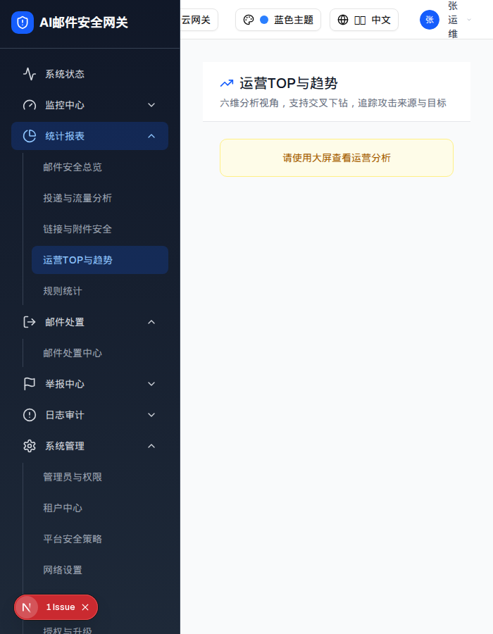

| 触发路径 | 视口宽度 < 768px（Tailwind md 断点） |

| 元素 | class | <768px | ≥768px |
|---|---|---|---|
| 提示条 | block md:hidden bg-yellow-50 border-yellow-200 | 显示 | 隐藏 |
| 筛选条 | hidden md:flex | 隐藏 | 显示 |
| 维度 Tab | hidden md:block | 隐藏 | 显示 |
| 操作栏 | hidden md:flex | 隐藏 | 显示 |
| TOP 列表卡 | — | 仍渲染（未加 md:hidden） | 显示 |
✅ 这是四个统计页里唯一实现了小屏降级的页面（PRD §8 明确要求）。
| 比对项 | demo 实际 DOM | 提取的 HTML | 是否一致 |
|---|---|---|---|
| 提示条 | div.block.md:hidden，文案「请使用大屏查看运营分析」 | 同 | 一致 |
| 看板主体 | hidden md:flex / hidden md:block | 同 | 一致 |
| PRD 文案 | 「请使用更宽屏幕查看」 | demo 用「请使用大屏查看运营分析」 | 措辞不同 |